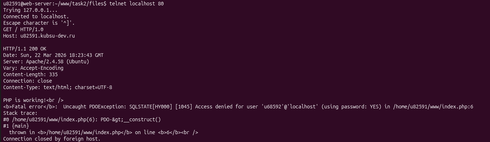
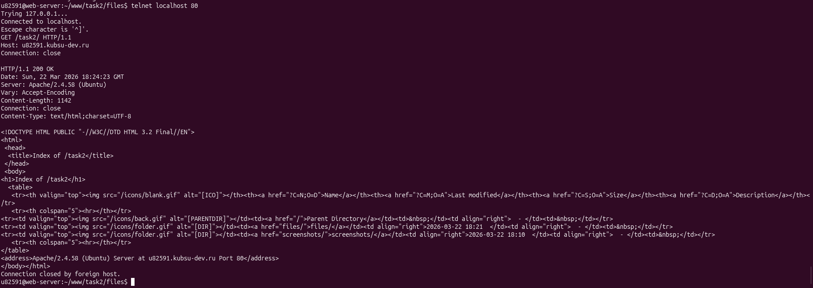
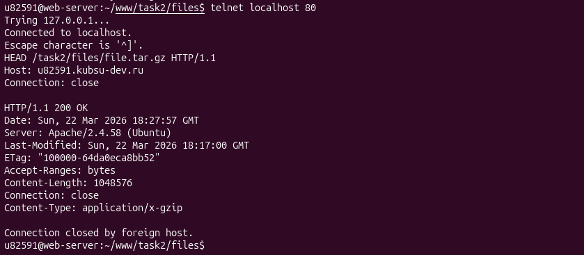
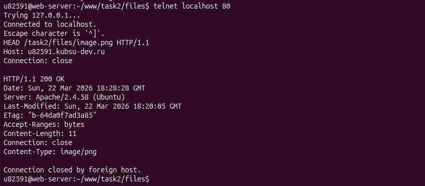
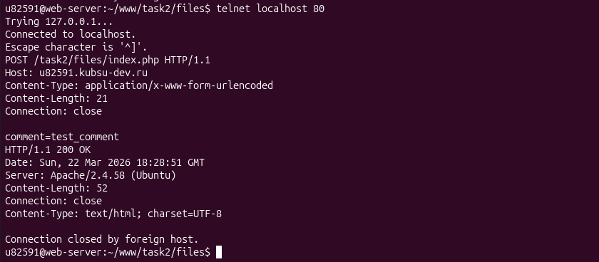
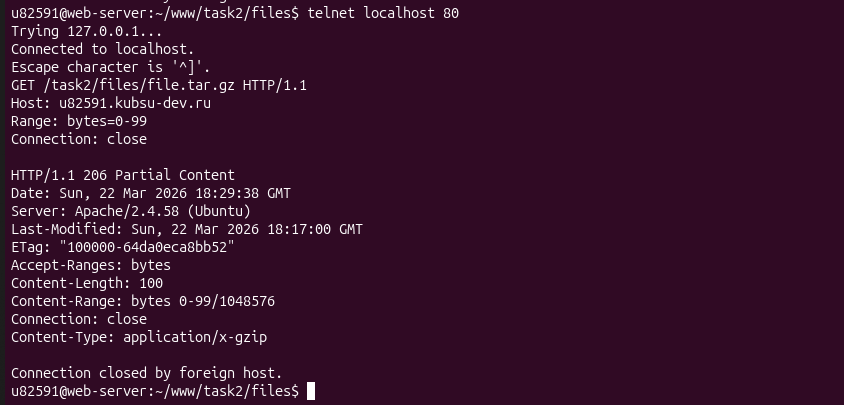
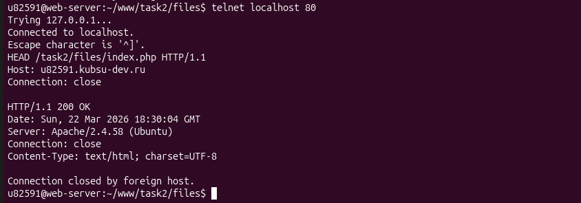

Выполнить GET-запрос к главной странице сервера с использованием протокола HTTP 1.0. Этот протокол не поддерживает постоянные соединения — после каждого запроса соединение закрывается.

Выполнить GET-запрос к внутренней странице /task2/ с использованием протокола HTTP 1.1. В отличие от HTTP 1.0, этот протокол поддерживает постоянные соединения.

Использовать метод HEAD вместо GET. HEAD запрашивает только заголовки ответа без тела, что позволяет получить метаинформацию о файле без его загрузки.

Использовать метод HEAD для получения только заголовков. Медиатип (MIME-type) определяется из заголовка Content-Type.

Отправить POST-запрос с данными комментария. POST передает данные в теле запроса, что требует указания заголовков Content-Type и Content-Length.

Использовать заголовок Range для частичной загрузки файла. Это позволяет получить только указанный диапазон байт, не скачивая весь файл.

Использовать метод HEAD для получения заголовков. Кодировка указывается в заголовке Content-Type после параметра charset.
